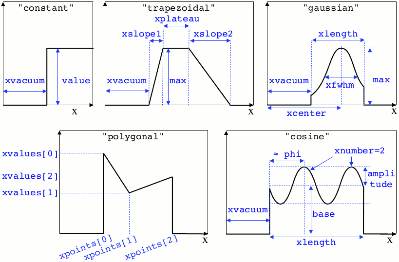
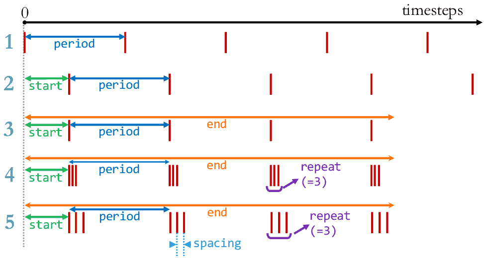

Write a namelist¶
Before you run Smilei, you need a namelist (an input file). The namelist is written in the python language. It is thus recommended to know the basics of python.
We suggest you copy one existing namelist from the folder benchmarks.
All namelists have the extension .py.
General rules¶
Smilei requires a few blocks to be defined, such as:
Main( # ... timestep = 0.01, # defines the timestep value sim_length = [10., 20.], # defines the 2D box dimensions # ... )
Outside blocks, you can calculate anything you require. Inside a block, you must only define variables for Smilei.
The python syntax requires special indentation of each line. You begin with no indentation, but you have to add four spaces at the beginning of lines inside a group, and so on. For instance:
if a == 0: timestep = 0.1 if b == 1: timestep = 0.2 else: timestep = 0.3
You will need to use lists, which are series of things in python, defined between brackets
[]and separated by commas. For example,mean_velocity = [0., 1.1, 3.].You are free to import any installed python package into the namelist. For instance, you may obtain \(\pi\) using
from math import pi.All quantities are normalized to arbitrary values: see Units.
Python workflow¶
Python is started at the beginning of the simulation (one python interpreter for each MPI node). The following steps are executed:
- A few variables from Smilei are passed to python so that they are
available to the user:
- The rank of the current MPI node as
smilei_mpi_rank. - The total number of MPI nodes as
smilei_mpi_size. - The maximum random integer as
smilei_rand_max.
- The rank of the current MPI node as
- The namelist(s) is executed.
- Python runs
cleanup()if the user has defined it (this can be a good place to delete unused heavy variables and unload unused modules). - Python checks whether the python interpreter is needed during the simulation (e.g. the user has defined a temporal profile which requires python to calculate it every timestep). Otherwise, python is stopped.
All these instructions are summarized in a file smilei.py,
so that the user can directly run python -i smilei.py for post-processing purposes.
Main variables¶
The block Main is mandatory and has the following syntax:
Main(
geometry = "1d3v",
interpolation_order = 2,
sim_length = [16. ],
cell_length = [0.01],
sim_time = 15.,
timestep = 0.005,
number_of_patches = [64],
clrw = 5,
maxwell_sol = 'Yee',
bc_em_type_x = ["silver-muller", "silver-muller"],
bc_em_type_y = ["silver-muller", "silver-muller"],
time_fields_frozen = 0.,
referenceAngularFrequency_SI = 0.,
print_every = 100,
random_seed = 0,
)
-
geometry¶ The geometry of the simulation:
"1d3v"or"2d3v".1dor2dcorrespond to the number of spatial dimensions.3vindicates the number of dimensions for velocities.
-
interpolation_order¶ Default: 2 Interpolation order. To this day, only
2is available.
-
sim_length¶ -
number_of_cells¶ - A list of floats: size of the simulation box for each dimension of the simulation.
- Either
sim_length, the simulation length in each direction in units of \(L_r\), - or
number_of_cells, the number of cells in each direction.
- Either
-
cell_length¶ A list of floats: sizes of one cell in each direction in units of \(L_r\).
-
sim_time¶ -
number_of_timesteps¶ - Duration of the simulation.
- Either
sim_time, the simulation duration in units of \(T_r\), - or
number_of_timesteps, the total number of timesteps.
- Either
-
timestep¶ -
timestep_over_CFL¶ - Duration of one timestep.
- Either
timestep, in units of \(T_r\), - or
timestep_over_CFL, in units of the Courant–Friedrichs–Lewy (CFL) time.
- Either
-
number_of_patches¶ A list of integers: the number of patches in each direction. Each integer must be a power of 2, and the total number of patches must be greater or equal than the number of MPI processes. See Parallelization basics.
-
clrw¶ Default: Cluster width. to do
-
maxwell_sol¶ Default: ‘Yee’ The solver for Maxwell’s equations. Only
"Yee"is available at the moment.
-
solve_poisson¶ Default: True Decides if Poisson correction must be applied or not initially.
-
poisson_iter_max¶ Default: 50000 Maximum number of iteration for the Poisson solver.
-
poisson_error_max¶ Default: 1e-14 Maximum error for the Poisson solver.
-
bc_em_type_x¶ -
bc_em_type_y¶ Type: lists of two strings: [bc_min, bc_max]Default: ["periodic", "periodic"]The boundary conditions for the electromagnetic fields. The strings
bc_minandbc_maxmust be one of the following choices:"periodic","silver-muller", or"reflective".
-
time_fields_frozen¶ Default: Time, at the beginning of the simulation, during which fields are frozen.
-
referenceAngularFrequency_SI¶ The value of the reference angular frequency \(\omega_r\) in SI units, only needed when collisions or ionization are requested. This frequency is related to the normalization length according to \(L_r\omega_r = c\) (see Units).
-
print_every¶ Number of timesteps between each info output on screen. By default, 10 outputs per simulation.
-
random_seed¶ Default: the machine clock The value of the random seed. To create a per-processor random seed, you may use the variable
smilei_mpi_rank.
Load Balancing¶
The block LoadBalancing is optional. If you do not define it, load balancing will
occur every 150 iterations.
LoadBalancing(
initial_balance = True,
every = 150,
coef_cell = 1.,
coef_frozen = 0.1
)
-
initial_balance¶ Default: True Decides if the load must be balanced at initialization. If not, the same amount of patches will be attributed to each MPI rank.
-
every¶ Default: 150 An integer: the number of timesteps between each load balancing (patches are exchanged between MPI processes to reduce load imbalance).
-
coef_cell¶ Default: to do
-
coef_frozen¶ Default: 0.1 to do
Moving window¶
The block MovingWindow is optional. The window does not move it you do not define it.
MovingWindow(
time_start = 0.,
velocity_x = 1.,
)
-
time_start¶ Default: The time at which the window starts moving.
-
velocity_x¶ Default: The velocity of the moving window in the x direction.
Note
The particle diagnostics accept an “axis” called moving_x
corresponding to the x coordinate corrected by the moving window’s current movement.
Species¶
Each species has to be defined in a Species block:
Species(
species_type = "electrons1",
initPosition_type = "random",
initMomentum_type = "maxwell-juettner",
n_part_per_cell = 100,
mass = 1.,
atomic_number = None,
nb_density = 10.,
# charge_density = None,
charge = -1.,
mean_velocity = [0.],
temperature = [1e-10],
bc_part_type_xmin = "refl",
bc_part_type_xmax = "refl",
# bc_part_type_ymax = None,
# bc_part_type_ymin = None,
# thermT = None,
# thermVelocity = None,
time_frozen = 0.0,
# ionization_model = "none",
# ionization_electrons = None,
# radiating = False,
isTest = False,
track_every = 10,
track_flush_every = 100,
c_part_max = 1.0,
dynamics_type = "norm",
)
-
species_type¶ The name you want to give to this species.
-
initPosition_type¶ The initialization of particle positions:
"regular"for regularly spaced"random"for randomly distributed"centered"for centered in each cell
-
initMomentum_type¶ The initialization of particle momenta:
"maxwell-juettner"for a relativistic maxwellian (see how it is done)"rectangular"for a rectangular distribution"cold"for zero temperature
The first 2 distributions depend on the parameter
temperatureexplained below.
-
n_part_per_cell¶ Type: float or python function (see section Profiles) The number of particles per cell.
-
mass¶ The mass of particles, in units of the electron mass \(m_e\).
-
atomic_number¶ Default: 0 The atomic number of the particles, required only for ionization. It must be lower than 101.
-
nb_density¶ -
charge_density¶ Type: float or python function (see section Profiles) The absolute value of the number density or charge density (choose one only) of the particle distribution, in units of the reference density \(N_r\) (see Units).
-
charge¶ Type: float or python function (see section Profiles) The particle charge, in units of the elementary charge \(e\).
-
mean_velocity¶ Type: a list of 3 floats or python functions (see section Profiles) The initial drift velocity of the particles, in units of the speed of light \(c\).
-
temperature¶ Type: a list of 3 floats or python functions (see section Profiles) The initial temperature of the particles, in units of \(m_ec^2\).
-
bc_part_type_xmin¶ -
bc_part_type_xmax¶ -
bc_part_type_ymin¶ -
bc_part_type_ymax¶ The boundary condition for particles:
"refl"for reflecting,"supp"for suppressing,"stop"for stopping,"periodic", and"thermalize".
-
thermT¶ Default: None to do
-
thermVelocity¶ Default: None to do
-
time_frozen¶ Default: The time during which the particle positions are not updated, in units of \(T_r\).
-
ionization_model¶ Default: "none"The model for field ionization. Currently, only
"tunnel"is available. See this for collisional ionization instead.
-
ionization_electrons¶ The name of the electron species that field ionization uses when creating new electrons.
-
radiating¶ Default: Falseto do
-
isTest¶ Default: FalseFlag for test particles. If
True, this species will contain only test particles which do not participate in the charge and currents.
-
track_every¶ Default: 0 Number of timesteps between each output of particles trajectories, or a time selection. If non-zero, the particles positions will be tracked and written in a file named
TrackParticles_abc.h5(whereabcisspecies_type).
-
track_flush_every¶ Default: 1 Number of timesteps or a time selection.
When
track_flush_everycoincides withtrack_every, the output file for tracked particles is actually written (“flushed” from the buffer). Flushing too often can dramatically slow down the simulation.
-
track_filter¶ A python function giving some condition on which particles are tracked. If none provided, all particles are tracked. To use this option, the numpy package must be available in your python installation.
The function must have the arguments
x,y(if 2D or above),z(if 3D),px,pyandpz. Each of these variables are provided as numpy arrays of doubles. Each element corresponds to one particle. The function must return a boolean numpy array of the same shape, containingTruewhere the particle should be tracked, andFalsein other locations.The following 2D example selects all the particles that verify \(-1<p_x<1\) or \(p_z>3\):
def my_filter(x, y, px, py, pz): return (px>-1.)*(px<1.) + (pz>3.)
-
c_part_max¶ to do
-
dynamics_type¶ Default: normType of pusher to be used for this species. The default value corresponds to the relativistic Boris pusher. Smilei has the following solvers implemented: * borisnr: The non-relativistic Boris pusher * vay: The relativistic pusher of J. L. Vay * higueracary: The relativistic pusher of A. V. Higuera and J. R. Cary
Lasers¶
A laser consists in applying oscillating boundary conditions for the magnetic
field on one of the box sides. The only boundary conditions that support lasers
are "silver-muller" (see bc_em_type_x).
There are several syntaxes to introduce a laser in Smilei:
1. Defining a generic wave
Laser( boxSide = "xmin", space_time_profile = [ By_profile, Bz_profile ] )
boxSide¶
Default: "xmin"Side of the box from which the laser originates: at the moment, only
"xmin"and"xmax"are supported.
space_time_profile¶
Type: A list of two python functions The full wave expression at the chosen box side. It is a list of two python functions taking several arguments depending on the simulation dimension: \((t)\) for a 1-D simulation, \((y,t)\) for a 2-D simulation (etc.) The two functions represent \(B_y\) and \(B_z\), respectively.
2. Defining the wave envelopes
Laser( boxSide = "xmin", omega = 1., chirp_profile = tconstant(), time_envelope = tgaussian(), space_envelope = [ By_profile , Bz_profile ], phase = [ PhiY_profile, PhiZ_profile ] )This implements a wave of the form:
\[ \begin{align}\begin{aligned}B_y(\mathbf{x}, t) = S_y(\mathbf{x})\; T\left[t-\phi_y(\mathbf{x})/\omega(t)\right] \;\sin\left( \omega(t) t - \phi_y(\mathbf{x}) \right)\\B_z(\mathbf{x}, t) = S_z(\mathbf{x})\; T\left[t-\phi_z(\mathbf{x})/\omega(t)\right] \;\sin\left( \omega(t) t - \phi_z(\mathbf{x}) \right)\end{aligned}\end{align} \]where \(T\) is the temporal envelope, \(S_y\) and \(S_y\) are the spatial envelopes, \(\omega\) is the time-varying frequency, and \(\phi_y\) and \(\phi_z\) are the phases.
omega¶
Default:
The laser angular frequency.
chirp_profile¶
Type: a python function or a time profile Default: tconstant()The variation of the laser frequency over time, such that \(\omega(t)=\mathtt{omega}\times\mathtt{chirp\_profile}(t)\).
time_envelope¶
Type: a python function or a time profile Default: tconstant()The temporal envelope of the laser.
space_envelope¶
Type: a list of two python functions or two spatial profiles Default: [ 1., 0. ]The two spatial envelopes \(S_y\) and \(S_z\).
phase¶
Type: a list of two python functions or two spatial profiles Default: [ 0., 0. ]The two spatially-varying phases \(\phi_y\) and \(\phi_z\).
3. Defining a 1D planar wave
For one-dimensional simulations, you may use the simplified laser creator:
LaserPlanar1D( boxSide = "xmin", a0 = 1., omega = 1., polarizationPhi = 0., ellipticity = 0., time_envelope = tconstant() )
a0¶
Default:
The normalized vector potential
polarizationPhi¶
Default:
The angle of the polarization ellipse major axis relative to the X-Y plane, in radians.
ellipticity¶
Default:
The polarization ellipticity: 0 for linear and \(\pm 1\) for circular.
4. Defining a 2D gaussian wave
For two-dimensional simulations, you may use the simplified laser creator:
LaserGaussian2D( boxSide = "xmin", a0 = 1., omega = 1., focus = [50., 40.], waist = 3., incidence_angle = 0., polarizationPhi = 0., ellipticity = 0., time_envelope = tconstant() )
focus¶
Type: A list of two floats [X, Y]The
XandYpositions of the laser focus.
waist¶The waist value. Transverse coordinate at which the field is at 1/e of its maximum value.
incidence_angle¶
Default:
The angle of the laser beam relative to the X axis, in radians.
time_envelopeTime envelope of the field (not intensity).
5. Defining a 3D gaussian wave
For three-dimensional simulations, you may use the simplified laser creator:
LaserGaussian3D( boxSide = "xmin", a0 = 1., omega = 1., focus = [50., 40., 40.], waist = 3., incidence_angle = [0., 0.1], polarizationPhi = 0., ellipticity = 0., time_envelope = tconstant() )This is almost the same as
LaserGaussian2D, with thefocusparameter having now 3 elements (focus position in 3D), and theincidence_anglebeing a list of two angles, corresponding to rotations around y and z, respectively.
External fields¶
An external field can be applied using an ExtField block:
ExtField(
field = "Ex",
profile = constant(0.01, xvacuum=0.1)
)
-
field¶ Field name:
"Ex","Ey","Ez","Bx","By"or"Bz".
-
profile¶ Type: float or python function (see section Profiles) The initial spatial profile of the applied field. Refer to Units to understand the units of this field.
Antennas¶
An antenna is an extra current applied during the whole simulation.
It is applied using an Antenna block:
Antenna(
field = "Jz",
space_profile = gaussian(0.01),
time_profile = tcosine(base=0., duration=1., freq=0.1)
)
-
field The name of the current:
"Jx","Jy"or"Jz".
-
space_profile¶ Type: float or python function (see section Profiles) The initial spatial profile of the applied antenna. Refer to Units to understand the units of this current.
-
time_profile¶ Type: float or python function (see section Profiles) The temporal profile of the applied antenna. It multiplies
space_profile.
Profiles¶
Several quantities require the input of a profile: particle charge, particle density, external fields, etc. Depending on the case, they can be spatial or temporal profiles.
1. Constant profiles
Species( ... , charge = -3., ... )defines a species with charge \(Z^\star=3\).Species( ... , nb_density = 10., ... )defines a species with density \(10\,N_r\). You can choosenb_density(number density) orcharge_densitySpecies( ... , mean_velocity = [0.05, 0., 0.], ... )defines a species with drift velocity \(v_x = 0.05\,c\) over the whole box.Species(..., initMomentum_type="maxwell-juettner", temperature=[1e-5], ...)defines a species with a Maxwell-Jüttner distribution of temperature \(T = 10^{-5}\,m_ec^2\) over the whole box. Note that the temperature may be anisotropic:temperature=[1e-5, 2e-5, 2e-5].Species( ... , n_part_per_cell = 10., ... )defines a species with 10 particles per cell.ExtField( field="Bx", profile=0.1 )defines a constant external field \(B_x = 0.1 B_r\).
2. Python profiles
Any python function can be a profile. Examples:
def f(x): if x<1.: return 0. else: return 1.import math def f(x,y): # two variables for 2D simulation twoPI = 2.* math.pi return math.cos( twoPI * x/3.2 )f = lambda x: x**2 - 1.Once the function is created, you have to include it in the block you want, for example:
Species( ... , charge = f, ... ) Species( ... , mean_velocity = [f, 0, 0], ... )
Note
It is possible, for higher performances, to create functions with arguments (x, y, etc.) that are actually numpy arrays. If the function returns a numpy array of the same size, it will automatically be considered as a profile acting on arrays instead of single floats. Currently, this feature is only available on Species’ profiles.
3. Pre-defined spatial profiles
constant(value, xvacuum=0., yvacuum=0.)¶
Parameters:
- value – the magnitude
- xvacuum – vacuum region before the start of the profile.
trapezoidal(max, xvacuum=0., xplateau=None, xslope1=0., xslope2=0., yvacuum=0., yplateau=None, yslope1=0., yslope2=0.)¶
Parameters:
- max – maximum value
- xvacuum – empty length before the ramp up
- xplateau – length of the plateau (default is
sim_length\(-\)xvacuum)- xslope1 – length of the ramp up
- xslope2 – length of the ramp down
gaussian(max, xvacuum=0., xlength=None, xfwhm=None, xcenter=None, xorder=2, yvacuum=0., ylength=None, yfwhm=None, ycenter=None, yorder=2)¶
Parameters:
- max – maximum value
- xvacuum – empty length before starting the profile
- xlength – length of the profile (default is
sim_length\(-\)xvacuum)- xfwhm – gaussian FWHM (default is
xlength/3.)- xcenter – gaussian center position (default is in the middle of
xlength)- xorder – order of the gaussian.
Note: If
yorderequals 0, then the profile is constant over \(y\).
polygonal(xpoints=[], xvalues=[])¶
Parameters:
- xpoints – list of the positions of the points
- xvalues – list of the values of the profile at each point
cosine(base, amplitude=1., xvacuum=0., xlength=None, xphi=0., xnumber=1)¶
Parameters:
- base – offset of the profile value
- amplitude – amplitude of the cosine
- xvacuum – empty length before starting the profile
- xlength – length of the profile (default is
sim_length\(-\)xvacuum)- xphi – phase offset
- xnumber – number of periods within
xlength
polynomial(x0=0., y0=0., z0=0., order0=[], order1=[], ...)¶
Parameters:
- x0,y0 – The reference position(s)
- order0 – Coefficient for the 0th order
- order1 – Coefficient for the 1st order (2 coefficients in 2D)
- order2 – Coefficient for the 2nd order (3 coefficients in 2D)
- etc –
Creates a polynomial of the form
\[\begin{split}\begin{eqnarray} &\sum_i a_i(x-x_0)^i & \quad\mathrm{in\, 1D}\\ &\sum_i \sum_j a_{ij}(x-x0)^{i-j}(y-y0)^j & \quad\mathrm{in\, 2D}\\ &\sum_i \sum_j \sum_k a_{ijk}(x-x0)^{i-j-k}(y-y0)^j(z-z0)^k & \quad\mathrm{in\, 3D} \end{eqnarray}\end{split}\]Each
orderiis a coefficient (or list of coefficents) associated to the orderi. In 1D, there is only one coefficient per order. In 2D, eachorderiis a list ofi+1coefficients. For instance, the second order has three coefficients associated to \(x^2\), \(xy\) and \(y^2\), respectively. In 3D, eachorderiis a list of(i+1)*(i+2)/2coefficients. For instance, the second order has 6 coefficients associated to \(x^2\), \(xy\), \(xz\), \(y^2\), \(yz\) and \(z^2\), respectively.Examples:
Species( ... , density = gaussian(10., xfwhm=0.3, xcenter=0.8), ... ) ExtField( ..., profile = constant(2.2), ... )
4. Pre-defined temporal profiles
tconstant(start=0.)¶
Parameters: start – starting time
ttrapezoidal(start=0., plateau=None, slope1=0., slope2=0.)¶
Parameters:
- start – starting time
- plateau – duration of the plateau (default is
sim_time\(-\)start)- slope1 – duration of the ramp up
- slope2 – duration of the ramp down
tgaussian(start=0., duration=None, fwhm=None, center=None, order=2)¶
Parameters:
- start – starting time
- duration – duration of the profile (default is
sim_time\(-\)start)- fwhm – gaussian FWHM (default is
duration/3.)- center – gaussian center time (default is in the middle of
duration)- order – order of the gaussian
tpolygonal(points=[], values=[])¶
Parameters:
- points – list of times
- values – list of the values at each time
tcosine(base=0., amplitude=1., start=0., duration=None, phi=0., freq=1.)¶
Parameters:
- base – offset of the profile value
- amplitude – amplitude of the cosine
- start – starting time
- duration – duration of the profile (default is
sim_time\(-\)start)- phi – phase offset
- freq – frequency
tpolynomial(t0=0., order0=[], order1=[], ...)¶
Parameters:
- t0 – The reference position
- order0 – Coefficient for the 0th order
- order1 – Coefficient for the 1st order
- order2 – Coefficient for the 2nd order
- etc –
Creates a polynomial of the form \(\sum_i a_i(t-t_0)^i\).
Example:
Antenna( ... , time_profile = tcosine(freq=0.01), ... )
Illustrations of the pre-defined spatial and temporal profiles

Walls¶
A wall can be introduced using a PartWall block in order to
reflect, stop, thermalize or kill particles which reach it:
PartWall(
kind = "refl",
x = 20.
)
-
kind¶ The kind of wall:
"refl","stop","thermalize"or"supp"; corresponding to a reflective, stopping, thermalizing or suppressing wall, respectively.
Collisions¶
To have binary collisions in Smilei, add one or several Collisions blocks:
Collisions(
species1 = ["electrons1", "electrons2"],
species2 = ["ions1"],
coulomb_log = 5.,
debug_every = 1000,
ionizing = False,
)
-
species1¶ -
species2¶ Lists of species names (see
species_type).The collisions will occur between all species under the group
species1and all species under the groupspecies2. For example, to collide all electrons with ions:species1 = ["electrons1", "electrons2"], species2 = ["ions"]
Warning
This does not make
electrons1collide withelectrons2.The two groups of species have to be completely different OR exactly equal. In other words, if
species1is not equal tospecies2, then they cannot have any common species. If the two groups are exactly equal, we call this situation intra-collisions.
-
coulomb_log¶ Default: The Coulomb logarithm.
- If \(= 0\), the Coulomb logarithm is automatically computed for each collision.
- If \(> 0\), the Coulomb logarithm is equal to this value.
-
debug_every¶ Default: 0 Number of timesteps between each output of information about collisions.If 0, there will be no outputs.
-
ionizing¶ Default: False If
True, collisional ionization will occur. One of the species groups must be all electrons (mass= 1), and the other one all ions of the sameatomic_number.
For more details about the collision scheme in Smilei, see Binary collisions
Scalar diagnostics¶
Smilei can collect various scalar data, such as total particle energy, total field energy, etc.
This is done by including the block DiagScalar:
DiagScalar(
every = 10 ,
vars = ["Utot", "Ukin", "Uelm"],
precision = 10
)
-
every Number of timesteps between each output or a time selection.
-
vars¶ Default: []List of scalars that will be actually output. Note that most scalars are computed anyways.Omit this argument to include all scalars.
-
precision¶ Default: 10 Number of digits of the outputs.
The full list of scalars that are saved by this diagnostic:
| Global energies | |
Utot
Ukin
Uelm
Uexp
Ubal
Ubal_norm
Uelm_Ex
|
Total energy
Total kinetic energy (in the particles)
Total EM energy (in the fields)
Expected value (Initial energy \(-\) lost \(+\) gained)
Energy balance (Utot \(-\) Uexp)
Normalized energy balance (Ubal \(/\) Utot)
Energy in Ex field (\(\int E_x^2 dV /2\))
… and idem for fields Ey, Ez, Bx_m, By_m and Bz_m
|
| Energies lost/gained at boundaries | |
Ukin_bnd
Uelm_bnd
Ukin_out_mvw
Ukin_inj_mvw
Uelm_out_mvw
Uelm_inj_mvw
|
Kinetic energy exchanged at the boundaries during the timestep
EM energy exchanged at boundaries during the timestep
Kinetic energy lost during the timestep due to the moving window
Kinetic energy injected during the timestep due to the moving window
EM energy lost during the timestep due to the moving window
EM energy injected during the timestep due to the moving window
|
| Species information | |
Dens_abc
Zavg_abc
Ukin_abc
Ntot_abc
|
Average density of species “abc”
… its average charge
… its total kinetic energy
… and number of particles
|
| Fields information | |
ExMin
ExMinCell
ExMax
ExMaxCell
PoyXmin
PoyXminInst
|
Minimum of \(E_x\)
… and its location (cell index)
Maximum of \(E_x\)
… and its location (cell index)
… same for fields Ey Ez Bx_m By_m Bz_m Jx Jy Jz Rho
Accumulated Poynting flux through xmin boundary
Current Poynting flux through xmin boundary
… same for other boundaries
|
Checkout the post-processing documentation as well.
Fields diagnostics¶
Smilei can collect various field data (electromagnetic fields, currents and density)
taken at the location of the PIC grid, both as instantaneous values and averaged values.
This is done by including a block DiagFields:
DiagFields(
every = 10,
time_average = 2,
fields = ["Ex", "Ey", "Ez"]
)
-
every Number of timesteps between each output or a time selection.
-
flush_every¶ Default: 1 Number of timesteps or a time selection.
When flush_every coincides with every, the output file is actually written (“flushed” from the buffer). Flushing too often can dramatically slow down the simulation.
-
time_average¶ Default: 1(no averaging)The number of timesteps for time-averaging.
-
fields¶ Default: [](all fields are written)List of the field names that are saved. By default, they all are.
The full list of fields that are saved by this diagnostic:
Bx
By
Bz
|
Components of the magnetic field
|
Bx_m
By_m
Bz_m
|
Components of the magnetic field (time-centered)
|
Ex
Ey
Ez
|
Components of the electric field
|
Jx
Jy
Jz
|
Components of the total current
|
Jx_abc
Jy_abc
Jz_abc
|
Components of the current due to species “abc”
|
Rho
Rho_abc
|
Total density
Density of species “abc”
|
Probe diagnostics¶
The fields from the previous section are taken at the PIC grid locations, but it is also possible to obtain the fields at arbitrary locations. These are called probes.
A probe interpolates the fields at either one point (0-D), several points arranged in a line (1-D) or several points arranged in a mesh (2-D).
To add one probe diagnostic, include the block DiagProbe:
DiagProbe(
every = 10,
pos = [1., 1.],
pos_first = [1.,10.],
pos_second = [10.,1.],
number = [100, 100],
fields = ["Ex", "Ey", "Ez"]
)
-
every Number of timesteps between each output or a time selection.
-
flush_every Default: 1 Number of timesteps or a time selection.
When flush_every coincides with every, the output file is actually written (“flushed” from the buffer). Flushing too often can dramatically slow down the simulation.
-
pos¶ -
pos_first¶ -
pos_second¶ Type: A list of floats, of length equal to the simulation dimensionality. The coordinates of several points.One point provided = a 0-D probe.Two points provided = a 1-D probe.Three points provided = a 2-D probe.
-
number¶ Type: A list of integers, one for each dimension of the probe. The number of points in each probe axis. Must not be defined for a 0-D probe.
-
fields Default: [](all fields)A list of fields among
"Ex","Ey","Ez","Bx","By","Bz","Jx","Jy","Jz"and"Rho". Only these fields will be saved. Note that it does NOT speed up calculation much, but it saves disk space.
Examples of probe diagnostics
0-D probe in 1-D simulation
DiagProbe( every = 1, pos = [1.2] )
1-D probe in 1-D simulation
DiagProbe( every = 1, pos = [1.2], pos_first = [5.6], number = [100] )
1-D probe in 2-D simulation
DiagProbe( every = 1, pos = [1.2, 4.], pos_first = [5.6, 4.], number = [100] )
2-D probe in 2-D simulation
DiagProbe( every = 1, pos = [0. , 0.], pos_first = [10. , 0.], pos_second = [0., 10.], number = [100, 100] )
Particle diagnostics¶
A particle diagnostic collects data from the macro-particles and processes them during runtime. It does not provide information on individual particles: instead, it produces averaged quantities like the particle density, currents, etc.
The data is discretized inside a “grid” chosen by the user. This grid may be of any dimension.
Examples:
- 1-dimensional grid along the position \(x\) (gives density variation along \(x\))
- 2-dimensional grid along positions \(x\) and \(y\) (gives density map)
- 1-dimensional grid along the velocity \(v_x\) (gives the velocity distribution)
- 2-dimensional grid along position \(x\) and momentum \(p_x\) (gives the phase-space)
- 1-dimensional grid along the kinetic energy \(E_\mathrm{kin}\) (gives the energy distribution)
- 3-dimensional grid along \(x\), \(y\) and \(E_\mathrm{kin}\) (gives the density map for several energies)
- 1-dimensional grid along the charge \(Z^\star\) (gives the charge distribution)
Each dimension of the grid is called “axis”.
You can add a particle diagnostic by including a block DiagParticles() in the namelist,
for instance:
DiagParticles(
output = "density",
every = 5,
time_average = 1,
species = ["electrons1", "electrons2"],
axes = [
["x", 0., 10, 100],
["ekin", 0.1, 100, 1000, "logscale", "edge_inclusive"]
]
)
-
output¶ determines the data that is summed in each cell of the grid:
- with
"density", the weights are summed. - with
"charge_density", the weights \(\times\) charge are summed. - with
"jx_density", the weights \(\times\) charge \(\times\; v_x\) are summed (same with \(y\) and \(z\)). - with
"p_density", the weights \(\times\; p\) are summed (same with \(p_x\), \(p_y\) and \(p_z\)). - with
"ekin_density", the weights \(\times mc^2\; (\gamma-1)\) are summed. - with
"pressure_xx", the weights \(\times\; v_x p_x\) are summed (same with yy, zz, xy, yz and xz).
- with
-
every The number of time-steps between each output, or a time selection.
-
flush_every Default: 1 Number of timesteps or a time selection.
When flush_every coincides with every, the output file is actually written (“flushed” from the buffer). Flushing too often can dramatically slow down the simulation.
-
time_average Default: 1 The number of time-steps during which the data is averaged before output.
-
species A list of the names of one or several species (see
species_type).
-
axes¶ A list of “axes” that define the grid.
Syntax of one axis:
[type, min, max, nsteps, "logscale", "edge_inclusive"]typeis one of"x","y","z","px","py","pz","p","gamma","ekin","vx","vy","vz","v"or"charge". There is one additional type, specific for simulations that include a moving window: the x-coordinate corrected by the window current movementmoving_x.- The axis is discretized for
typefrommintomaxinnstepsbins. - The optional keyword
logscalesets the axis scale to logarithmic instead of linear. - The optional keyword
edge_inclusiveincludes the particles outside the range [min,max] into the extrema bins.
There may be as many axes as wanted in one
DiagParticles( ... )block.
Note
As an experimental capability, we created the “composite” axes type.
You may write the axis type as "ax+by+cz", where a, b and c are numbers.
This syntax does NOT accept characters other than numbers and the characters xyz+-.
For instance, it does not accept divisions / or whitespace.
The resulting axis is along the vector of coordinates \((a,b,c)\).
For instance, in 2D, "x+2y" makes an axis oriented along the vector \((1,2)\).
Examples of particle diagnostics
Variation of the density of species
electron1from \(x=0\) to 1, every 5 time-steps, without time-averagingDiagParticles( output = "density", every = 5, time_average = 1, species = ["electron1"], axes = [ ["x", 0., 1., 30] ] )
Density map from \(x=0\) to 1, \(y=0\) to 1
DiagParticles( output = "density", every = 5, time_average = 1, species = ["electron1"], axes = [ ["x", 0., 1., 30], ["y", 0., 1., 30] ] )
Velocity distribution from \(v_x = -0.1\) to \(0.1\)
DiagParticles( output = "density", every = 5, time_average = 1, species = ["electron1"], axes = [ ["vx", -0.1, 0.1, 100] ] )
Phase space from \(x=0\) to 1 and from \(px=-1\) to 1
DiagParticles( output = "density", every = 5, time_average = 1, species = ["electron1"], axes = [ ["x", 0., 1., 30], ["px", -1., 1., 100] ] )
Energy distribution from 0.01 to 1 MeV in logarithmic scale. Note that the input units are \(m_ec^2 \sim 0.5\) MeV
DiagParticles( output = "density", every = 5, time_average = 1, species = ["electron1"], axes = [ ["ekin", 0.02, 2., 100, "logscale"] ] )
\(x\)-\(y\) density maps for three bands of energy: \([0,1]\), \([1,2]\), \([2,\infty]\). Note the use of
edge_inclusiveto reach energies up to \(\infty\)DiagParticles( output = "density", every = 5, time_average = 1, species = ["electron1"], axes = [ ["x", 0., 1., 30], ["y", 0., 1., 30], ["ekin", 0., 6., 3, "edge_inclusive"] ] )
Charge distribution from \(Z^\star =0\) to 10
DiagParticles( output = "density", every = 5, time_average = 1, species = ["electron1"], axes = [ ["charge", -0.5, 10.5, 11] ] )
Screen diagnostics¶
A screen collects data from the macro-particles when they cross a surface. It processes this data similarly to the particle diagnostics as it makes a histogram of the macro-particle properties. The only difference is that the histogram is made only by the particles that cross the surface.
You can add a screen by including a block DiagScreen() in the namelist,
for instance:
DiagScreen(
shape = "plane",
point = [5., 10.],
vector = [1., 0.],
direction = "canceling",
output = "density",
species = ["electron"],
axes = [["a", -10.*l0, 10.*l0, 40],
["px", 0., 3., 30]],
every = 10
)
-
shape¶ The shape of the screen surface:
"plane"or"sphere".
-
point¶ Type: A list of floats [X]in 1D,[X,Y]in 2D,[X,Y,Z]in 3DThe coordinates of a point that defines the screen surface: a point of the
"plane"or the center of the"sphere".
-
vector¶ Type: A list of floats [X]in 1D,[X,Y]in 2D,[X,Y,Z]in 3DThe coordinates of a vector that defines the screen surface: the normal to the
"plane"or a radius of the"sphere".
-
direction¶ Default: "both"Determines how particles are counted depending on which side of the screen they come from.
"both"to account for both sides."forward"for only the ones in the direction of thevector."backward"for only the ones in the opposite direction."canceling"to count negatively the ones in the opposite direction.
-
output Identical to the
outputof particle diagnostics.
-
every The number of time-steps between each output, or a time selection.
-
flush_every Default: 1 Number of timesteps or a time selection.
When flush_every coincides with every, the output file is actually written (“flushed” from the buffer). Flushing too often can dramatically slow down the simulation.
-
species A list of the names of one or several species (see
species_type).
-
axes A list of “axes” that define the grid of the histogram. It is identical to that of particle diagnostics, with the addition of four types of axes:
"a"and"b"are the axes perpendicular to thevector, when the screen shape is a"plane"."theta"and"phi"are the angles with respect to thevector, when the screen shape is a"sphere".
Time selections¶
Several components (mainly diagnostics) may require a selection of timesteps to
be chosen by the user. When one of these timesteps is reached, the diagnostics will
output data. A time selection is given through the parameter every and is a list
of several numbers.
You may chose between five different syntaxes:
every = [ period ] # Syntax 1
every = [ start, period ] # Syntax 2
every = [ start, end, period ] # Syntax 3
every = [ start, end, period, repeat ] # Syntax 4
every = [ start, end, period, repeat, spacing ] # Syntax 5
where
startis the first timestep of the selection (defaults to 0);endis the last timestep of the selection (defaults to ∞);periodis the separation between outputs (defaults to 1);repeatindicates how many outputs to do at each period (defaults to 1);spacingis the separation between each repeat (defaults to 1).
For more clarity, this graph illustrates the five syntaxes for time selections:
Tips
- The syntax
every = periodis also accepted. - Any value set to
0will be replaced by the default value. - Special case:
every=0means no output. - The numbers may be non-integers (apart from
repeat). The closest timesteps are chosen.
Checkpoints¶
The simulation can be dumped at given points (checkpoints) in order to be restarted at that point.
A few things are important to know when you need dumps and restarts.
- Do not restart the simulation in the same directory as the previous one. Files will be overwritten, and errors may occur. Create a new directory for your restarted simulation.
- Manage your memory: each process dumps one file, and the total can be significant.
- each MPI process will write its own hdf5 checkpoint file which will have the format dump-XXXXX-YYYYYYYYYY.h5 where XXXXX is the sequence file (see below) and YYYYYYYYYY is the mpi rank.
DumpRestart(
restart_dir = "dump1",
dump_step = 10000,
dump_minutes = 240.,
dump_deflate = 0,
exit_after_dump = True,
dump_file_sequence = 2,
)
-
restart_dir¶ Default: None This tells Smilei where to find dump files for restart. If not defined, it does not restart from a previous dump.
WARNING: this path must either absolute or be relative to the simulation directory
-
dump_step¶ Default: 0 The number of timesteps between each dump of the full simulation. If
0, no dump is done.
-
dump_minutes¶ Default: The number of minutes between each dump of the full simulation (combines with
dump_step). If0., no dump is done.
-
dump_deflate¶ to do
-
exit_after_dump¶ Default: TrueIf
True, the code stops after the dump.
-
dump_file_sequence¶ Default: 2 This tells Smilei to keep the last
ndumps for a later restart. The default value, 2, saves one extra dump in case of a crash during the file dump.
-
file_grouping¶ Default: None The maximum number of checkpoint files that can be stored in one directory. New subdirectories are created according to the total number of files. This is useful on filesystem with a limited number of files per directory.
-
restart_number¶ Default: None If provided, the code will restart from that checkpoint, otherwise it uses the most recent one.
Variables defined by Smilei¶
Smilei passes the following variables to the python interpreter for use in the namelist. They should not be re-defined by the user!
-
smilei_mpi_rank¶ The MPI rank of the current process.
-
smilei_mpi_size¶ The total number of MPI processes.
-
smilei_rand_max¶ The largest random integer.
As an example of their use, this script randomizes both python’s and Smilei’s random seeds.
import random, math
# reshuffle python random generator
random.seed(random.random()*smilei_mpi_rank)
# get 32bit pseudo random integer to be passed to smilei
random_seed = random.randint(0,smilei_rand_max)


{kind=link}